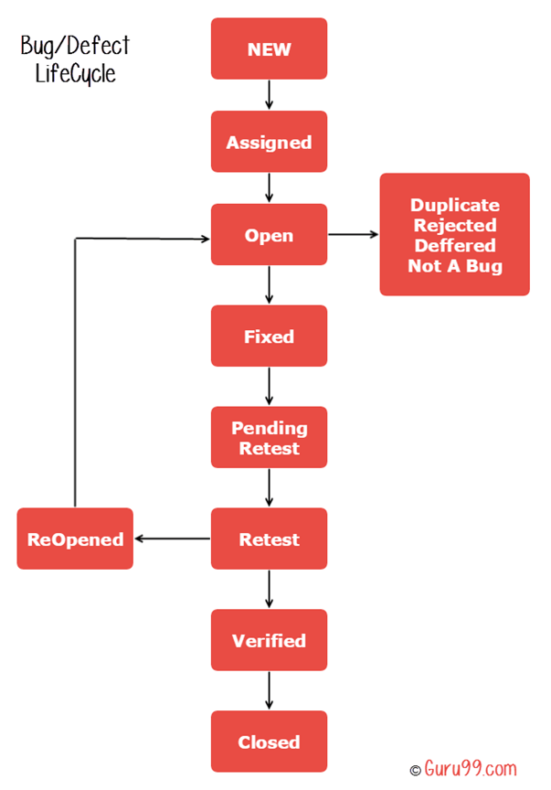
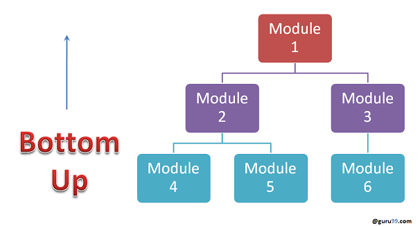
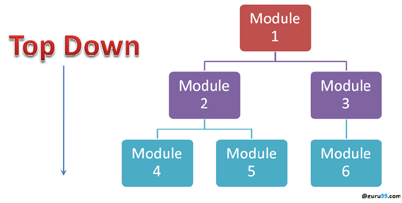
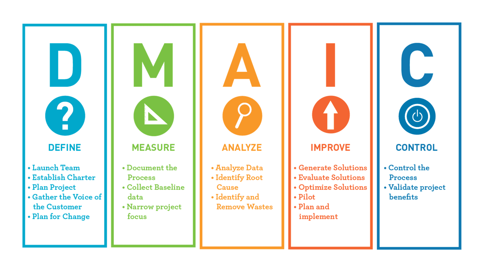
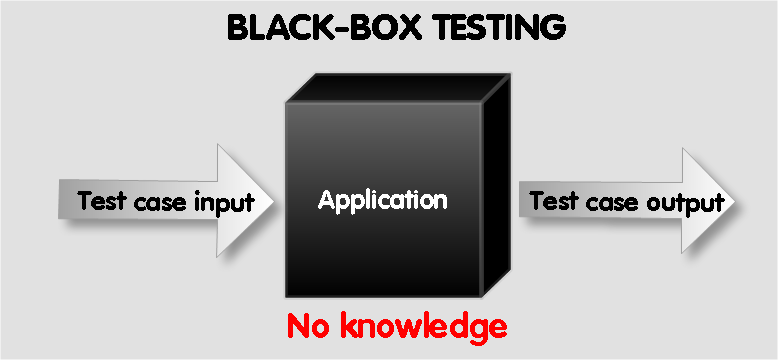
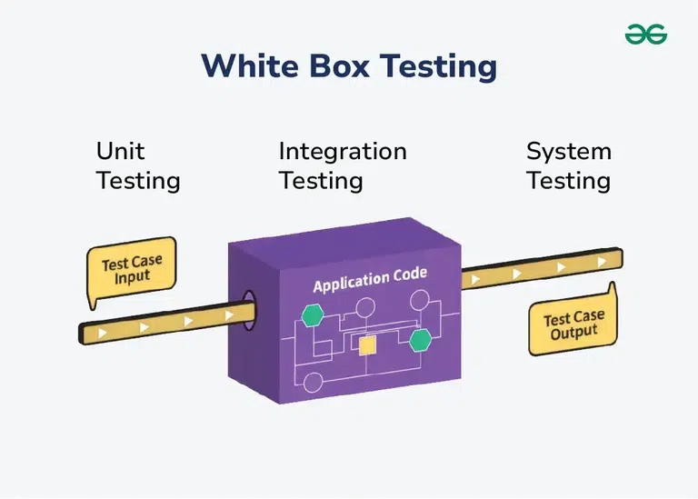
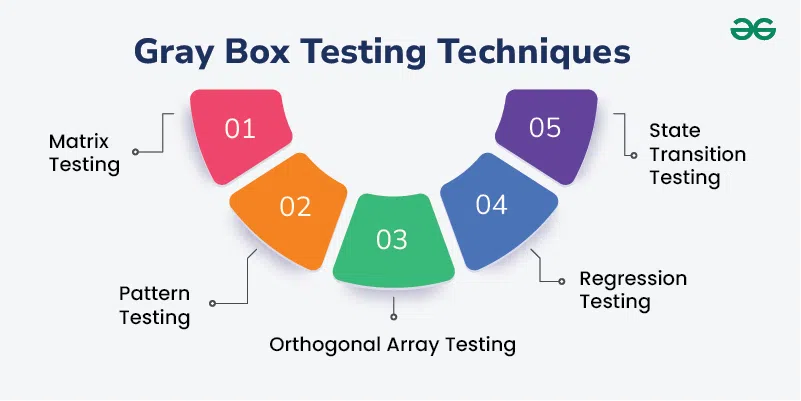

STQA
10 Marks
Consider the program for calculating the factorial of a number: (2023) (2022)
Question 1 (2023)
void main(void) {
int number;
1. clrscr();
2. printf("Enter the number whose factorial is to be found out");
3. scanf("%d", &number);
4. if (number < 0) {
5. printf("Factorial cannot be defined for this number");
6. } else {
7. printf("Factorial is %d", fact(number));
8. }
}
int fact(int number) {
int index;
1. int product = 1;
2. for (index = 1; index <= number; index++) {
3. product = product * index;
4. return (product);
}
Draw the DD graph for the program.

Calculate the individual cyclomatic complexity number for main() and fact() and then, the cyclomatic complexity for the whole program.
- e = edges
- n = total number of nodes
- p = components
For main():
$$v(main) = e-n+2(p) = 5-5+2(1)=2$$
For fact():
$$v(fact)=e-n+2(p) = 4-4+2(1) = 2$$ For whole:
$$v(whole)=e-n+2(p) = 9-9+2(2)=4$$
Question 2 (2022)
void main(void) {
int number, index;
1. printf("Enter a number:");
2. scanf("%d", &number);
3. index = 2;
4. while (index <= number-1)
5. {
6. if (number%index == 0)
7. {
8. printf("Not a prime number");
9. break;
10. }
11. index++;
12. }
13. if (index == number)
14. printf("Prime number");
15.}
Draw the DD graph for the program.

Calculate the individual cyclomatic complexity number for main() and fact() and then, the cyclomatic complexity for the whole program.
- e = edges
- n = total number of nodes
- p = components
$$v(n) = e-n+2(p) = 10 - 8 + 2(1) = 4 $$
What is Agile testing? Explain challenges in Agile Testing. (2023) (2022)

Agile testing is a software testing practice that aligns with the principles of Agile development, emphasizing collaboration, flexibility, and rapid feedback.
It involves continuous testing throughout the development lifecycle, allowing teams to identify and address issues early and often.
This approach contrasts with traditional testing methods, which often treat testing as a distinct phase that occurs after development.
Key Characteristics of Agile Testing:
- Continuous Testing
- Collaboration
- Quick Feedback Loops
- Adaptability
Challenges in Agile Testing
- Rapidly Changing Requirements: Frequent updates and short deadlines make it difficult to keep up with testing.
- Continuous Integration and Deployment (CI/CD): Frequent releases require efficient test automation and quick feedback loops.
- Test Automation Challenges: Tool selection, maintenance, and effectiveness are key concerns.
- Skillset Requirements: Agile testers need a diverse skill set and adaptability.
- Test Environment Challenges: Complex environments and maintenance are significant hurdles.
What are the Key elements of Test Management? Explain the structure of testing group. (2023) (2022 5 Marks)
Key Elements of Test Management
- Test Planning:
- Defining the scope and objectives of testing.
- Identifying testing strategies and techniques to be used.
- Test Design:
- Designing test cases based on requirements, specifications, and design documents.
- Test Execution:
- Executing test cases manually or using automated tools.
- Comparing actual results with expected results.
- Defect Tracking:
- Tracking and managing defects throughout their lifecycle.
- Test Reporting:
- Generating test reports to summarize test results, defect status, and overall test coverage.
- Test Environment Setup:
- Configuring and maintaining test environments that mimic production conditions.
- Test Automation:
- Automating test cases to improve efficiency and reduce execution time.
Structure of a Testing Group
flowchart TD
ql[QA Lead] --> tl[Team Lead]
tl --> ut[Usability Testing
Engineer]
tl --> mt[Manual Testing
Engineer]
tl --> at[Automated Testing
Engineer]
mt --> nt[Network Test
Engineer] -->
tc[Test Library &
Configuration Specialist]-->
Tester
- Usability Test Engineer: Focuses on evaluating the product's user interface and ensuring it is easy to use and understand.
- Manual Testing Engineer: Performs manual tests by executing test cases and verifying the product's functionality.
- Automated Test Engineer: Develops and executes automated test scripts to improve efficiency and test coverage.
- Network Test Engineer: Tests the product's network performance and compatibility with different network configurations.
- Test Library and Configuration Specialist: Manages the test environment, including test data and configuration settings.
- Tester: Performs general testing tasks, including executing test cases and reporting defects.
Why is automation important in testing? What are the guidelines/criteria for selecting testing tools? (2023) (2022 5 Marks)

Automation in testing is a powerful tool that brings several advantages:
- Increased Efficiency: Automated tests can be executed rapidly and repeatedly, significantly reducing testing time.
- Enhanced Accuracy: Automated tests eliminate human error, leading to more accurate and reliable results.
- Early Bug Detection: By running tests frequently, automation helps identify and fix bugs early in the development cycle.
- Reduced Cost: While there's an initial investment in setting up automation, long-term cost savings are achieved through reduced manual effort and faster time to market.
- Reusability: Automated test scripts can be reused across different test cycles and projects.
Guidelines for Selecting Testing Tools
- Ease of Use: The tool should have a user-friendly interface and require minimal training.
- Integration Capabilities: The tool should integrate seamlessly with other tools in your development environment, such as CI/CD pipelines.
- Cost-Effectiveness: Evaluate the licensing costs and long-term benefits of the tool.
- Scalability: The tool should be able to handle increasing test complexity and project scale.
- Reporting and Analytics: The tool should provide comprehensive reports and analytics to track test results and identify trends.
- Maintenance and Support: The vendor should provide reliable maintenance and support services.
What are graph metrics?
Graph metrics are quantitative measures that describe the properties and characteristics of graphs. They help analyze the structure, connectivity, and behavior of networks represented as graphs. Common graph metrics include the number of nodes (vertices), edges, degree of vertices, and various centrality measures.
Key Graph Metrics
- Vertex Count: The total number of vertices in a graph.
- Edge Count: The total number of edges connecting the vertices.
- Degree: The number of edges connected to a vertex.
- Path Length: The number of edges in the shortest path between two vertices.
- Clustering Coefficient: Measures how connected a vertex's neighbors are to each other.
Example
Calculate the individual cyclomatic complexity number for main() and fact() and then, the cyclomatic complexity for the whole program.
- e = edges
- n = total number of nodes
- p = components
$$v(n) = e-n+2(p) = 10 - 8 + 2(1) = 4 $$
What is Mutation Testing? Explain primary mutant with an example. Differentiate between primary and secondary Mutants. (2023) (2022 5 Marks)

Mutation testing, also known as code mutation testing, is a form of white box testing in which testers change specific components of an application's source code to ensure a software test suite can detect the changes.
Changes introduced to the software are intended to cause errors in the program.
Mutation testing is designed to ensure the quality of a software testing tool, not the applications it analyzes.
Types of mutation testing:
- Statement mutation. Statements are deleted or replaced with a different statement. For example, the statement "A=10 by B=5" is replaced with "A=5 by B=15."
- Value mutation. Values are changed to find errors. For example, "A= 15" is changed to "A= 10" or "A=25."
- Decision mutation. Arithmetic or logical operators are changed to detect errors. For example, "(A
Primary Mutant
A primary mutant is a single, simple change made to the source code. This change can be a simple modification like:
- Arithmetic Operator Mutation: Replacing an operator like
+with-,*, or/. - Constant Mutation: Modifying the value of a constant.
- Control Flow Mutation: Altering the condition of a loop or if-else statement.
- Statement Deletion Mutation: Removing a statement from the code.
Example:
Consider the following simple JavaScript code:
function add(a, b) { return a + b }
A primary mutant could be created by changing the + operator to -:
function add(a, b) { return a - b }
Secondary Mutants:
- Created by applying a mutation operator to an already mutated program (i.e., a primary mutant).
- This introduces another layer of change, making the mutant potentially more complex.
Example
Consider the following simple JavaScript code:
if (x > 10) { console.log("x is greater than 10"); }
Let's introduce a mutant by changing the > operator to >=:
if (x >= 10) { console.log("x is greater than or equal to 10"); }
Primary Vs Secondary Mutants
| Feature | Primary Mutants | Secondary Mutants |
|---|---|---|
| Definition | Single, simple change | Multiple combined changes |
| Complexity | Less | More |
| Detection | Easy | More |
| Effectiveness | Effective for simple faults | Effective for complex faults |
| Example | Replace operator, modify constant, delete statement | Combine multiple primary mutations |
| Mutation Score | Lower | Higher |
| Test Suite Quality | Identifies weaknesses | Comprehensive assessment |
| Cost and Time | Less | More |
Classify different types of bugs based on the Software development lifecycle with example. (2023) (2022)
flowchart a[Requirement Phase Bugs]--> b[Design Phase Bugs]--> c[Implementation Phase Bugs]--> d[Testing Phase Bugs]--> e[Deployment Phase Bugs]-->f f[Maintenance Phase Bugs]
- Requirement Phase Bugs
- Description: These bugs arise from unclear, incomplete, or incorrect requirements.
- Example: A requirement states that a user must be able to log in using either an email or a username.
- Design Phase Bugs
- Description: Bugs that occur due to design flaws or misinterpretations of requirements.
- Example: If the design does not account for session management properly, it may lead to security vulnerabilities allowing multiple sessions.
- Implementation Phase Bugs
- Description: Occur due to programming errors, logical flaws, or misunderstandings of the design specifications.
- Examples: Incorrect use of programming language syntax, such as missing semicolons or mismatched parentheses.
- Testing Phase Bugs
- Description: These bugs are identified during the testing phase, often through manual or automated testing.
- Examples: The software does not perform as expected according to the specified requirements.
- Deployment Phase Bugs
- Description: Bugs that appear when software is deployed in a production environment but were not detected during testing.
- Example: A configuration issue that prevents users from accessing certain features after deployment, such as server mis-configurations leading to downtime.
- Maintenance Phase Bugs
- Description: These bugs may arise from updates or changes made after the initial deployment.
- Example: A new feature introduced in an update inadvertently breaks existing functionality, such as altering how user permissions are handled and causing access issues.
Explain the process of test suite prioritization with its type in detail with example. (2023)
Test suite prioritization is a crucial strategy in software testing that involves ranking test cases based on their importance and risk. By prioritizing test cases, teams can optimize their testing efforts, reduce testing time, and increase test coverage.
Process of Test Suite Prioritization
- Identify Test Cases: Create a comprehensive list of all test cases.
- Analyze Test Cases: Evaluate each test case based on factors like risk, impact, and coverage.
- Assign Priorities: Assign priority levels to each test case, such as high, medium, and low.
- Create a Prioritized Test Suite: Organize the test cases in a prioritized order, starting with high-priority test cases.
- Execute Test Cases: Execute the test cases according to the prioritized order, focusing on high-priority test cases first.
Types of Test Suite Prioritization
- Risk-Based Prioritization: Prioritize test cases that cover high-risk areas like critical functionalities, recent changes, and potential impact zones.
- Coverage-Based Prioritization: Focus on test cases that cover frequently used or recently modified code sections.
- Time-Based Prioritization: Prioritize test cases based on deadlines and release schedules, focusing on critical features.
- Business Impact-Based Prioritization: Prioritize test cases that validate features with high business impact.
- Hybrid Approach: Combine multiple techniques to tailor prioritization to specific project needs.
Explain ISO 9000:2000 standard. (2023)
ISO 9000:2000 is a set of international standards developed by the International Organization for Standardization (ISO) that focuses on quality management systems (QMS).
This series aims to ensure that organizations consistently meet customer and regulatory requirements while enhancing customer satisfaction.
Below is an overview of the key components and principles of the ISO 9000:2000 standard.
The ISO 9000:2000 family of standards comprised several key standards:
- ISO 9000:2000: Quality Management Systems - Fundamentals and Vocabulary
- Provides definitions and fundamental concepts related to quality management systems.
- ISO 9001:2000: Quality Management Systems - Requirements
- Outlines the specific requirements for implementing a quality management system.
- This is the most widely used standard in the series.
- ISO 9004:2000: Quality Management Systems - Guidelines for Performance Improvement
- Provides guidelines for improving the performance of a quality management system.
Quality Management Principles:
- Customer focus
- Leadership
- Engagement of People
- Process Approach
- Improvement
- Evidence based
- Relationship Management
What is performance testing? Why is performance testing important? (2023)
Performance testing encompasses a variety of testing methods aimed at assessing the speed, responsiveness, and stability of software applications, networks, and systems when subjected to different conditions.
The primary goals include identifying performance bottlenecks, ensuring the application meets performance requirements, and validating that it can handle anticipated user loads effectively.
Types of Performance Testing:
- Load Testing: Assesses how the system behaves under expected load conditions.
- Stress Testing: Evaluates the system's limits by applying extreme workloads.
- Spike Testing: Examines how the system handles sudden increases in load.
- Scalability Testing: Determines how well the application scales with increased loads or users.
Importance of Performance Testing
- Enhances User Experience: By ensuring that applications respond quickly and reliably, performance testing helps maintain a positive user experience.
- Identifies Potential Issues Early: Conducting performance tests during development allows teams to identify and address issues before they reach production.
- Validates System Capacity: Performance testing helps organizations understand how many users their system can handle simultaneously without degradation in performance.
- Supports Business Continuity: By ensuring that applications perform well under load, organizations can avoid downtime during peak usage periods.
- Informs Stakeholders: Performance testing results provide valuable insights to stakeholders regarding application readiness and performance capabilities, aiding in decision-making processes related to deployment and resource allocation.
- Reduces Risk of Reputation Damage: Applications that perform poorly can harm an organization’s reputation.
Consider a project with the following distribution of data and calculate its defect spoilage. (2022)
| SDLC Phase | No. of Defects | Defect Age |
|---|---|---|
| Requirement Specs. | 34 | 2 |
| HLD | 25 | 3 |
| LLD | 17 | 7 |
| Coding | 10 | 8 |
To calculate the defect spoilage for the project based on the provided data, we can use the formula for defect spoilage:
$$\text{Defect Spoilage} = \sum (\text{Defects} \times \text{Defect Age})$$
Step-by-Step Calculation
We'll calculate the total defect spoilage by multiplying the number of defects by their respective defect ages for each SDLC phase and then summing these values.
- Requirement Specs:
- Defects: 34
- Defect Age: 2
- Contribution to Spoilage: 34×2 = 68
- HLD:
- Defects: 25
- Defect Age: 3
- Contribution to Spoilage: 25×3= 75`
- LLD:
- Defects: 17
- Defect Age: 7
- Contribution to Spoilage: 17×7 = 119
- Coding:
- Defects: 10
- Defect Age: 8
- Contribution to Spoilage: 10×8=80
Total Defect Spoilage Calculation
Now, summing all contributions:
$$\text{Total Spoilage} = 68 + 75 + 119 + 80 = 342$$
A Program read an integer number within range [1, 100] and determines whether it is prime number or not. Design test cases for this program using BVC, Robust and Worst-case testing method.
Boundary Value Coverage (BVC)
- Min = 1
- Min+1 = 2
- Max = 100
- Max - 1 = 99
- Nominal = (52-55)
| ID | Integer | Output |
|---|---|---|
| 1 | 1 | Not prime number |
| 2 | 2 | Prime number |
| 3 | 100 | Not prime number |
| 4 | 99 | Not prime number |
| 5 | 52 | Not prime number |
Robust Testing
- Min = 1
- Min - 1 = 0
- Min + 1 = 2
- Max = 100
- Max - 1 = 99
- Max + 1 = 101
- Nominal = (50-55)
| ID | Integer | Output |
|---|---|---|
| 1 | 1 | Not prime number |
| 2 | 0 | Invalid |
| 3 | 2 | Prime number |
| 4 | 100 | Not prime number |
| 5 | 99 | Not prime number |
| 6 | 101 | Invalid |
| 7 | 52 | Not prime number |
A program reads three numbers A, B and C, within the range [1,100] and prints the minimum number. Design test cases for this program using BVC and Robust testing methods. (2022)
Boundary Value Coverage (BVC)
- Min = 1
- Min+1 = 2
- Max = 100
- Max - 1 = 99
- Nominal = (52-55)
- Formula for number of inputs: 4n+1 = 4(3)+1 = 13
| ID | A | B | C | Output |
|---|---|---|---|---|
| 1 | 1 | 2 | 50 | A is min |
| 2 | 1 | 50 | 99 | A is min |
| 3 | 2 | 1 | 50 | B is min |
| 4 | 50 | 55 | 100 | A is min |
| 5 | 55 | 2 | 1 | C is min |
| 6 | 99 | 20 | 5 | C is min |
| 7 | 69 | 53 | 3 | C is min |
| 8 | 23 | 69 | 1 | C is min |
| 9 | 5 | 2 | 69 | B is min |
| 10 | 1 | 6 | 90 | A is min |
| 11 | 6 | 21 | 23 | A is min |
| 12 | 10 | 53 | 23 | A is min |
| 13 | 11 | 1 | 60 | B is min |
Robust Testing
- Min = 1
- Min - 1 = 0
- Min + 1 = 2
- Max = 100
- Max - 1 = 99
- Max + 1 = 101
- Nominal = (50-55)
| ID | A | B | C | Output |
|---|---|---|---|---|
| 1 | 1 | 2 | 100 | A is min |
| 2 | 0 | 50 | 99 | Invalid |
| 3 | 2 | 1 | 50 | B is min |
| 4 | 2 | 55 | 100 | A is min |
| 5 | 100 | 2 | 1 | C is min |
| 6 | 55 | 20 | 5 | C is min |
| 7 | 101 | 53 | 3 | Invalid |
| 8 | 23 | 69 | 1 | C is min |
| 9 | 5 | 2 | 69 | B is min |
| 10 | 1 | 6 | 90 | A is min |
| 11 | 6 | 21 | 0 | Invalid |
| 12 | 10 | 53 | 23 | A is min |
| 13 | 11 | 1 | 60 | B is min |
What is the need of software measurement? Discuss the various types of software metrics. (2022)
Software measurement is the process of quantifying software attributes to understand, evaluate, and improve software development processes and products.
It is essential for several reasons:
- Quality Assurance: It helps identify potential problems early in the development cycle, leading to better software quality.
- Process Improvement: By measuring key metrics, organizations can identify areas for improvement and optimize their processes.
- Risk Management: It helps assess the risks associated with a software project and take proactive measures to mitigate them.
- Decision Making: It provides data-driven insights to support decision-making at various stages of the software development lifecycle.
- Predictive Analytics: By analyzing historical data, organizations can predict future trends and make informed decisions.
Types of Software Metrics
- Product Metrics: These metrics measure the attributes of the software product itself.
- Size Metrics:
- Lines of Code (LOC): Measures the number of lines of code in a program. It is a simple but often inaccurate measure of software size.
- Function Points: A more sophisticated measure that considers the complexity and functionality of the software.
- Cyclomatic Complexity: Measures the complexity of a program's control flow. It is calculated based on the number of decision points in the code.
- Quality Metrics:
- Defects per KLOC: Measures the number of defects found per 1,000 lines of code. It is a common metric for assessing the quality of code.
- Mean Time Between Failures (MTBF): Measures the average time between failures of a software system. It is a measure of the reliability of the software.
- Mean Time To Repair (MTTR): Measures the average time it takes to repair a software failure. It is a measure of the maintainability of the software.
- Performance Metrics:
- Response Time: Measures the time it takes for a software system to respond to a user request.
- Throughput: Measures the number of requests a software system can process in a given amount of time.
- Resource Utilization: Measures how efficiently the software system uses system resources such as CPU, memory, and disk space.
- Size Metrics:
- Process Metrics: These metrics measure the effectiveness of the software development process.
- Productivity Metrics:
- Lines of Code per Person-Month: This metric measures the average number of lines of code produced by a developer in a month.
- Function Points per Person-Month: This metric measures the average number of function points produced by a developer in a month.
- Quality Metrics:
- Defect Density: This metric measures the number of defects found per unit of code, such as per thousand lines of code (KLOC) or per function point.
- Defect Removal Efficiency (DRE): This metric measures the percentage of defects that are found and fixed during the development process, rather than after the software is released.
- Schedule Metrics:
- Schedule Slippage: This metric measures the amount of time by which a project is delayed compared to its original schedule.
- Percentage of Tasks Completed on Time: This metric measures the percentage of tasks that are completed on schedule.
- Cost Metrics:
- Cost per Function Point: This metric measures the cost of developing a function point of software.
- Cost per Line of Code: This metric measures the cost of developing a line of code.
- Productivity Metrics:
Differentiate between static and dynamic tools. (2022)
| Feature | Static Testing Tools | Dynamic Testing Tools |
|---|---|---|
| Execution Time | Before code execution | During code execution |
| Focus | Code analysis | Software behavior |
| Common Techniques | Code review, static analysis | Unit testing, integration testing, system testing, performance testing |
| Output | Potential defects, code quality metrics | Execution logs, test reports |
| Examples | SonarQube, Checkstyle, PMD | JUnit, Selenium, JMeter, LoadRunner |
| Goal | Identify issues early | Validate software behavior |
| Cost | Lower | Higher |
| Technical Skill Requirement | Less | More |
| Automation | Highly | Can be automated |
| Test Environment | Not required | Required |
| Timing | Early in development | Later in development |
What are the components of a test plan? Illustrate test plan hierarchy with a neat diagram. (2022)
Test planning is a crucial aspect of the software testing lifecycle, involving the creation of a detailed document that outlines the objectives, scope, resources, and processes for testing a software product. Here’s a comprehensive overview:

- Analyze the Product: Conduct in-depth interviews and product walkthroughs to gain a comprehensive understanding of the product's objectives, target audience, and requirements.
- Design the Test Strategy: Develop a comprehensive test strategy document that outlines the scope of testing, types of tests, risks, and test logistics.
- Define Test Objectives and Expected Results Establish: clear test objectives and expected outcomes for each aspect of the software.
- Define Test Criteria: Establish suspension and exit criteria to define the benchmarks for suspending or completing testing activities.
- Plan Resources: Create a detailed list of all the resources required for project completion and allocate them effectively.
- Plan the Test Environment: Establish a suitable test environment that closely resembles real-world conditions.
- Schedule and Estimate: Break down the testing project into smaller tasks, allocate time and effort, and create a detailed schedule.
- Determine Test Deliverables: Identify the list of documents, tools, and other equipment required for testing activities.
Explain McCall's Quality factors and Criteria. (2022)

McCall's Quality Model, introduced in 1977 by Jim McCall and his colleagues, is a framework for evaluating software quality based on various factors that reflect both user and developer perspectives.
The model identifies several quality factors, categorized into three main areas: Product Operation, Product Revision, and Product Transition.
It divides software quality into three main categories:
- Product Revision: This category focuses on the ease of modifying and maintaining the software. It includes the following attributes:
- Maintainability: How easy it is to understand, correct, modify, and test the software.
- Flexibility: How adaptable the software is to changes in requirements or environment.
- Testability: How easy it is to test the software.
- Product Transition: This category focuses on the ease of transferring the software from one environment to another. It includes the following attributes:
- Portability: How easy it is to move the software from one hardware or software platform to another.
- Reusability: How reusable the components of the software are in other systems.
- Interoperability: How well the software can interact with other software systems.
- Product Operations: This category focuses on the performance and usability of the software. It includes the following attributes:
- Correctness: How accurately the software meets its specified requirements.
- Reliability: How often the software fails and how quickly it can be recovered from failures.
- Efficiency: How effectively the software uses resources, such as CPU time and memory.
- Integrity: How well the software protects sensitive data and prevents unauthorized access.
- Usability: How easy it is for users to learn and use the software.
Explain a bug life cycle with a neat diagram in detail. (2022)

- New: When a new defect is logged and posted for the first time. It is assigned a status as NEW.
- Assigned: Once the bug is posted by the tester, the lead of the tester approves the bug and assigns the bug to the developer team
- Open: The developer starts analyzing and works on the defect fix
- Fixed: When a developer makes a necessary code change and verifies the change, he or she can make bug status as “Fixed.”
- Pending retest: Once the defect is fixed the developer gives a particular code for retesting the code to the tester. Since the software testing remains pending from the testers end, the status assigned is “pending retest.”
- Retest: Tester does the retesting of the code at this stage to check whether the defect is fixed by the developer or not and changes the status to “Re-test.”
Differentiate between Effective Software Testing and Exhaustive Software Testing. (2022)
| Feature | Effective Software Testing | Exhaustive Software Testing |
|---|---|---|
| Definition | Practical, focused testing | Testing all inputs/outputs |
| Feasibility | Feasible | Often impractical |
| Efficiency | Efficient | Inefficient |
| Effectiveness | Identifies critical defects | Can identify all defects |
| Focus | Prioritized testing | Exhaustive testing |
| Approach | Risk-based, automated | Brute-force, manual |
| Real-world | Widely used | Rarely used |
| Cost | Lower | Higher |
| Time | Shorter | Longer |
| Risk | Lower risk of missing defects | Higher risk of missing defects |
5 Marks
What are different types of Integration testing? Explain Bottom-up Integration Testing with one example. (2023)
flowchart
it[Integration Testing]
it --> iit[Incremental Integration Testing]
it --> bbt[Big Bang Integration Testing]
iit --> bua[Bottom-Up Approach]
iit --> tda[Top-Down Approach]
iit --> sa[Sandwich Approach]
- Integration Testing is the overall process of combining individual components or modules of a software system and testing them together to verify their interactions and ensure they work as intended.
- Incremental Integration Testing is a strategy where modules are integrated in a systematic and incremental manner. There are three main approaches within this strategy:
- Bottom-up Approach:
- Starts with testing the lowest-level modules first and then gradually integrating them with higher-level modules.
- Example: In a layered architecture, you might start by testing individual database access modules. Once these are tested, you would integrate them with data access layer modules, and so on, moving up the layers.
- 
- Top-down Approach:
- Starts with testing the highest-level module first and then integrating it with lower-level modules.
- Example: In a web application, you might start by testing the user interface (UI) layer, using stubs to simulate the behavior of backend services. As testing progresses, you would replace the stubs with actual backend services.
- 
- Sandwich Approach:
- Combines both bottom-up and top-down approaches, where both high-level and low-level modules are tested and integrated simultaneously.
- Example: In a layered architecture, you might test the UI layer and the database access layer independently. Then, you would integrate the middle layers (e.g., business logic layer) with either the UI or the database layer, testing the interactions between them.

- Bottom-up Approach:
- Big Bang Integration Testing is a strategy where all the modules are integrated at once and tested as a single unit.
- This approach can be risky as it can be difficult to isolate and identify defects if problems arise. It is often used in smaller projects or when the system has a simple structure.
- Example: In a small standalone application, all modules (UI, business logic, and data access) might be integrated and tested together.

How to test simple loop in a program? (2023)
Simple loops are fundamental programming constructs that execute a block of code repeatedly until a certain condition is met. Common types include:
- For Loop: Iterates a specific number of times.
- While Loop: Continues as long as a condition is true.
- Do-While Loop: Executes at least once and then continues as long as a condition is true.
Steps to Test a Simple Loop:
- Identify the Loop Structure: Understand the type of loop being used (e.g.,
for,while, ordo-while) and its conditions. - Design Test Cases: Create test cases that cover different scenarios for the loop. Key scenarios include:
- Execute Tests: Run the test cases and observe the behavior of the loop.
- Analyze Results: Compare actual results against expected outcomes to determine if the loop functions as intended.
Explain Logic Coverage Criteria for Statement Coverage. (2023)
Logic Coverage Criteria, specifically Statement Coverage, is a testing metric used to determine the effectiveness of test cases in executing the code of a program.
Statement Coverage aims to ensure that each executable statement in the code is executed at least once during testing.
This type of coverage is fundamental in identifying parts of the code that have not been tested, potentially revealing untested paths and increasing the robustness of the software.
Key Concepts of Statement Coverage
- Executable Statements: These are lines of code that can be executed, such as assignments, condition checks, and method calls.
- Coverage Measurement: Statement coverage is expressed as a percentage: $$Statement Coverage= \Bigg({\text{Number of Executed Statements} \over \text{Total Number of Executable Statements}}\Bigg)×100 $$
How Statement Coverage Works
- Testing All Statements: The primary goal is to write test cases that cover every line of executable code.
- Single Path Testing: It's essential to ensure that each path through the code is tested at least once, but Statement Coverage does not necessarily require that all logical conditions (like those in if statements) are tested.
Explain State Table Based testing with example. (2023)
State Table Based Testing is a software testing technique used to validate the behavior of a system based on its different states and the transitions between those states. This approach is particularly useful for systems with complex state-dependent behavior, such as user interfaces, protocols, or finite state machines.
Example: ATM System
Let's consider an ATM system with the following states:
- S1: Idle
- S2: Waiting for PIN
- S3: Transaction in Progress
- S4: Dispensing Cash
- S5: Transaction Complete
- S6: Card Ejected
Events:
- Insert Card
- Enter PIN
- Withdraw Cash
- Cancel Transaction
- Timeout
State Transition Table:
| Current State | Event | Next State | Action |
|---|---|---|---|
| S1 | Insert Card | S2 | Display "Enter PIN" |
| S2 | Enter PIN | S3 | Validate PIN |
| S3 | Withdraw Cash | S4 | Dispense Cash |
| S3 | Cancel Transaction | S5 | Display "Transaction Canceled" |
| S2 | Timeout | S6 | Eject Card |
| S4 | Cash Dispensed | S5 | Display "Transaction Complete" |
| S5 | Eject Card | S1 | Return to Idle |
Test Case Generation
- TC001: Insert Card → Enter PIN → Withdraw Cash → Cash Dispensed → Eject Card (Valid transaction)
- TC002: Insert Card → Enter PIN → Cancel Transaction → Eject Card (Cancel before withdrawal)
- TC003: Insert Card → Timeout → Eject Card (Check timeout behavior)
- TC004: Insert Card → Enter Incorrect PIN (Invalid scenario)
Discuss the features and use of Bugzilla Testing Tool. (2023)
Bugzilla is an open-source bug tracking tool developed by the Mozilla Foundation, designed to help software development teams track and manage bugs and issues in their projects. It is widely used for its robust features that facilitate effective communication and collaboration among team members.
Key Features of Bugzilla
- Issue Tracking: Bugzilla allows users to create, manage, and track bugs throughout the software development lifecycle. Each bug can be categorized with details such as status, severity, and resolution.
- Advanced Search Capabilities: Users can perform simple and advanced searches to find specific bugs based on various criteria, including status, product, and keywords.
- Email Notifications: The tool provides customizable email notifications to keep users informed about changes or updates related to bugs they are following.
- Time Tracking: Bugzilla includes features for tracking the time spent on fixing bugs, helping teams manage their workload effectively.
- Customization and Localization: The tool can be tailored to meet the specific needs of an organization, including custom fields and localization options for different languages.
Discuss Six Sigma. (2022)

Six Sigma is a set of techniques and tools for process improvement. It was introduced by American engineer Bill Smith while working at Motorola in 1986.
Six Sigma strategies seek to improve manufacturing quality by identifying and removing the causes of defects and minimizing variability in manufacturing and business processes.
Key Concepts
- Six Sigma Quality: A process that operates with "six sigma quality" over the short term is assumed to produce long-term defect levels below 3.4 defects per million opportunities (DPMO).
- DMAIC: This is the acronym for the five phases of the Six Sigma methodology:
- Define: Define the process to be improved.
- Measure: Measure the process's performance.
- Analyze: Analyze the root causes of defects.
- Improve: Implement solutions to eliminate the root causes.
- Control: Control the improved process to ensure it stays that way.
Six Sigma Belts

Six Sigma practitioners are often referred to by color-coded belts, similar to martial arts:
- White Belt: Basic understanding of Six Sigma concepts.
- Yellow Belt: Trained in the DMAIC methodology and can participate in improvement projects.
- Green Belt: Trained in advanced Six Sigma techniques and can lead small-scale improvement projects.
- Black Belt: Highly trained Six Sigma experts who can lead large-scale improvement projects.
- Master Black Belt: Highly experienced Six Sigma leaders who mentor Black Belts and lead strategic initiatives.

Define each software testing terminology: (2022)
i) Failure ii) Defect iii) Error iv) Testware v) Test oracle
Failure
A failure occurs when a software application does not perform its intended function or deliver the expected results during execution.
It is the manifestation of an underlying defect in the software.
Failures can be observed by end-users when they interact with the application, leading to incorrect outputs or system crashes.
Example: If a user attempts to log into an application and receives an error message stating "Invalid username or password" despite entering correct credentials, this represents a failure in the login functionality.
Defect
A defect (often referred to as a bug) is a deviation from the expected behavior of the software.
It arises from flaws in the code, design, or requirements and is identified during testing.
Defects indicate that something is wrong with the software that needs to be addressed.
Example: If a calculator application incorrectly computes the sum of two numbers (e.g., it returns 4 instead of 5 for the input 2 + 3), this inconsistency represents a defect in the application.
Error
An error is a mistake made by a developer during the coding process.
Errors can result from misinterpretation of requirements, typos, or logical mistakes in the code. Errors are human-made and can lead to defects if not caught before testing.
Example: If a developer mistakenly uses = (assignment operator) instead of == (equality operator) in a conditional statement, this coding error may lead to unexpected behavior when the program runs.
Testware
Testware refers to all the artifacts produced during the testing process.
This includes:
- Test plans
- Test cases
- Test scripts
- Test data
- any other documentation or tools that support testing activitie
Testware is essential for organizing and executing tests effectively.
Example: A comprehensive test suite for an e-commerce website might include test cases for user registration, product search functionality, payment processing, and order confirmation emails. All these documents and scripts constitute the testware for that project.
Test Oracle
A test oracle is a mechanism or source that provides the expected outcomes for a given set of inputs during testing.
It serves as a reference point against which actual results can be compared to determine if the software behaves as intended.
Test oracles can be formal specifications, previous versions of software, or even expert knowledge.
Example: In testing a sorting algorithm, if you input an unsorted array [3, 1, 2], your test oracle would be the expected sorted output [1, 2, 3]. The actual output from the algorithm is compared against this expected result to verify correctness.
UT Questions
Black Box Testing

Black-box testing is a type of software testing in which the tester is not concerned with the software’s internal knowledge or implementation details but rather focuses on validating the functionality based on the provided specifications or requirements.
Advantages:
- Can be used for testing complex systems with unknown internal structures
- Less time-consuming and resource-intensive compared to White Box Testing
- Suitable for testing systems with changing or proprietary internal implementations
Disadvantages:
- May not identify internal errors or defects
- Requires thorough understanding of the system’s specifications and requirements
- May not be effective for testing systems with complex logic or algorithms
Types of Black Box Testing
- Functional Testing
- The test engineer will check all the components systematically against requirement specifications is known as functional testing. Functional testing is also known as Component testing.
- Types of Functional Testing
- Unit Testing
- Integration Testing
- System Testing
- Non-function Testing
- It provides detailed information on software product performance and used technologies. Non-functional testing will help us minimize the risk of production and related costs of the software.
- Types of Non-functional Testing
- Performance Testing
- Usability Testing
- Compatibility Testing
White Box Testing
White box testing is a software testing technique that involves testing the internal structure and workings of a software application .
The tester has access to the source code and uses this knowledge to design test cases that can verify the correctness of the software at the code level.
White box testing is also known as structural testing or code-based testing, and it is used to test the software’s internal logic, flow, and structure.

Types Of White Box Testing
- Unit Testing
- Checks if each part or function of the application works correctly.
- Ensures the application meets design requirements during development.
- Integration Testing
- Examines how different parts of the application work together.
- Done after unit testing to make sure components work well both alone and together.
- Regression Testing
- Verifies that changes or updates don’t break existing functionality.
- Ensures the application still passes all existing tests after updates.
Gray Box Testing

Greybox testing is a software testing method to test the software application with partial knowledge of the internal working structure.
It is a combination of black box and white box testing because it involves access to internal coding to design test cases as white box testing and testing practices are done at functionality level as black box testing.
Grey Box Testing Techniques

- Matrix Testing: Identifies and removes unused/uninitialized variables to improve readability and speed.
- Regression Testing: Ensures modifications don't introduce new defects.
- Orthogonal Array Testing (OAT): Covers maximum code with minimal test cases.
- Pattern Testing: Identifies and fixes recurring defects in similar software.
- Grey Box Testing Tools: Pattern testing is applicable to such type of software that is developed by following the same pattern of previous software.
Acceptance Testing
flowchart BT
ut[Unit Testing] -->
it[Integration Testing] -->
st[System Testing] -->
at[Acceptance Testing]
Acceptance testing is a quality assurance (QA) process that determines to what degree an application meets end users' approval.
Depending on the organization, acceptance testing might take the form of beta testing, application testing, field testing or end-user testing.
A QA team conducts acceptance tests to ensure the software or app matches business requirements and end-user needs.
An acceptance test returns either a pass or fail result. A fail suggests that there is a flaw present, and the software should not go into production.
Acceptance testing process
Acceptance testing occurs after system tests, but before deployment.
A QA team writes acceptance tests and sets them up to examine how the software acts in a simulated production environment.
Acceptance testing confirms the software's stability and checks for flaws.
Acceptance testing includes the following phases: plan, test, record, compare and result.
Regression Testing

Regression Testing is a type of testing in the software development cycle that runs after every change to ensure that the change introduces no unintended breaks.
Regression testing addresses a common issue that developers face — the emergence of old bugs with the introduction of new changes.
Typically, it involves writing a test for a known bug and re-running this test after every change to the code base. This aims to immediately identify any change that reintroduces a bug.

Example:
Consider an example where a software development company is working on releasing a new product for video editing. The primary requirement is to release their first build with only the core features. Before product release, a regression test is conducted with 1000 test cases to ensure the basic or freemium editing functionalities. Your initial build is ready to hit the market if it passes the tests successfully.
However, with the success of your first product making waves in the video editing landscape, your business team comes back with a requirement to add a few new premium features. Your product team develops those and adds them to the existing app, but with the addition of new codes, a regression test is required again. Hence, you write 100 new test cases to verify the functionality of those new features. However, you will have to run those 1000 old test cases already conducted to ensure essential functions haven’t been broken.
Testing Techniques

Types Of Software Testing Techniques
There are two main categories of software testing techniques:
- Static Testing Techniques are testing techniques that are used to find defects in an application under test without executing the code. Static Testing is done to avoid errors at an early stage of the development cycle thus reducing the cost of fixing them.
- Dynamic Testing Techniques are testing techniques that are used to test the dynamic behaviour of the application under test, that is by the execution of the code base. The main purpose of dynamic testing is to test the application with dynamic inputs- some of which may be allowed as per requirement (Positive testing) and some are not allowed (Negative Testing).
What are CMM model levels.

- Level 1: Initial
- Processes are ad hoc and chaotic.
- Success depends on individual efforts rather than defined processes.
- There is little to no documentation, making it difficult to replicate successes.
- Level 2: Repeatable
- Basic project management processes are established.
- Processes are documented enough to allow for the repetition of earlier successes on similar projects.
- Focus is on planning and tracking project performance.
- Level 3: Defined
- Processes are well-defined and documented.
- Standardized processes are established across the organization.
- Emphasis is placed on process consistency and integration.
- Level 4: Managed
- Processes are quantitatively managed and controlled.
- Performance metrics are used to ensure that processes meet defined quality standards.
- Management can predict process performance based on data analysis.
- Level 5: Optimizing
- Focus is on continuous process improvement through innovative practices.
- Organizations actively seek ways to enhance process performance and efficiency.
- Emphasis on defect prevention and leveraging new technologies for improvement.
What is JIRA testing tool.

JIRA is a powerful tool developed by Atlassian, primarily used for bug tracking, issue tracking, and project management. It is widely adopted in software development environments due to its flexibility and robust features.
Key Features of JIRA:
- Issue Tracking: JIRA allows teams to create, track, and manage issues or bugs throughout the software development lifecycle. Each issue can be assigned a status, priority, and resolution type.
- Project Management: The tool supports various project management methodologies, including Agile (Scrum and Kanban), enabling teams to plan sprints, track progress, and manage backlogs efficiently.
- Customizable Workflows: JIRA provides the ability to customize workflows according to the team's processes, allowing for better alignment with organizational needs.
- Integration Capabilities: JIRA integrates seamlessly with other development tools and platforms, enhancing collaboration between development and testing teams. This includes integration with CI/CD tools, test management tools, and version control systems.
- Reporting and Dashboards: Users can generate reports and dashboards that provide insights into project performance, team productivity, and issue resolution metrics. This helps in making data-driven decisions.
- Collaboration Tools: JIRA facilitates communication among team members through comments, notifications, and mentions within issues, ensuring everyone stays informed about project developments.
Explain selenium testing tool in detail.
Selenium is a widely utilized open-source suite of tools designed for automating the testing of web applications. Its flexibility and comprehensive capabilities make it a preferred choice for developers and testers in various environments.
flowchart TD
subgraph Selenium Suite
ide[Selenium
IDE]
rc[Selenium
RC]
wd[Web Driver]
g[Selenium Grid]
end
rc --> |Merged| s2[Selenium 2]
wd --> s2
s2 --> |New & Improved| s3[Selenium 3]
Components of Selenium:
- Selenium IDE (Integrated Development Environment):
- Description: A browser extension available for Chrome and Firefox that allows users to record their interactions with web applications and create automated test scripts.
- Selenium WebDriver:
- Description: The core component that provides a programming interface to create and execute test scripts.
- Selenium Grid:
- Description: A tool that allows for parallel execution of tests across multiple machines and browsers.
- Selenium Remote Control (RC) (Deprecated):
- Description: An earlier tool that allowed testers to write automated tests in various programming languages by acting as an intermediary between the test scripts and the browser.
Agile Vs Waterfall testing.
| Feature | Agile Testing | Waterfall Testing |
|---|---|---|
| Approach | Iterative and incremental | Sequential and linear |
| Testing Timing | Throughout the development lifecycle | At the end of the development lifecycle |
| Testing Involvement | Continuous and collaborative | Isolated and separate |
| Documentation | Minimal and adaptive | Extensive and upfront |
| Risk Management | Proactive and ongoing | Reactive and limited |
| Flexibility | High | Low |
| Customer Involvement | Frequent and active | Limited and infrequent |
| Feedback Loop | Short and frequent | Long and infrequent |
| Suitability for Projects | Small to medium-sized projects with changing requirements | Large-scale projects with stable requirements |